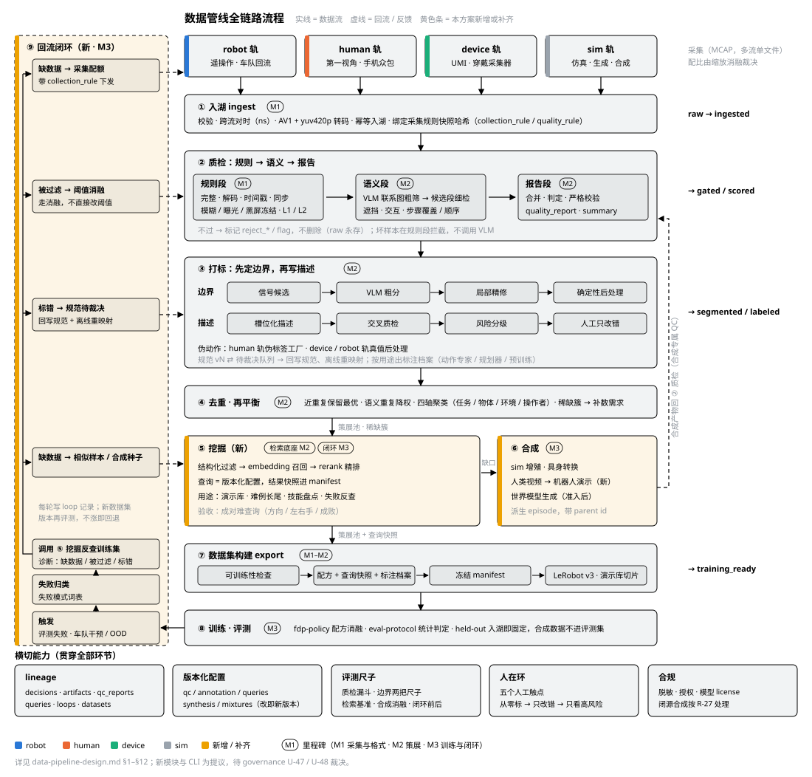

当前进度
一句话：“怎么做”基本想清楚了，“做出来”刚开始。M1 的目标是跑通入湖 → 规则段质检 → 报告 → 导出 → 训练读入的最小闭环。
代码 M1 起步
schema.pyEpisodeMeta 0.2，带 0.1→0.2 读侧迁移，冻结样本永远可读- CLI
record / ingest / curate / export / viz已接好，实现均为占位 - 9 个测试通过；docs 链接与禁用词扫描进 CI
设计 成体系
- 五层架构、数据契约、入湖规范、策展规范、训练与评测协议齐全
- 2026-11-17 补齐全链路设计（挖掘、合成、回流闭环）和数据系统规划
- 治理三表：风险、未决决策、他家自报数字
调研 19 份
- Figure、GR00T 2、某大模型厂商、Dyna、Sunday、Skild、自变量等
- 一手来源归档进
docs/sources/，自报数字标 ⚠️ - 结论按回灌清单写回设计文档
下一步 前 8 周
- 冻结质检报告 schema v1 与规则文件格式
- ingest 接上规则快照哈希，规则段质检落地
- lineage 核心表上线，用外部数据集跑通端到端
全链路流程
点击任一环节查看它做什么、关键规则、产物与对应文档。原则贯穿全程：清洗是标记不是删除，raw 永存（隐私脱敏与合法删除除外），每一步写 lineage。
⑨ 回流闭环把评测失败和车队干预按“缺数据 / 被过滤 / 标错”三类分别送回采集、质检、打标与挖掘合成；合成产物重新进入质检。

四条数据轨与五件采集设备
四轨共用同一个 EpisodeMeta，用 track 字段区分；所有模态可空（掩码）。采集方式是组合不是单选，新增采集形态 = 新增 track 值，不新增 schema。
| 轨 | 内容 | 动作来源 | 在训练中的角色 | 主要设备 |
|---|---|---|---|---|
| human | 第一视角视频：官方头戴 + Creator App 手机众包 | 无标签；手部 3D 关键点经伪标签工厂产出伪动作 | 预训练体量层（覆盖物体、场景、任务）；机器人对齐子集是精品层 | D2 头戴参考套件、D3 Creator 手机 |
| device | UMI / 同构穿戴式手持采集 | 硬件真值（VIO 位姿、编码器开合、夹持力、触觉） | 任务层主力；校准 human 轨伪标签 | D1 触觉同构 UMI、D1-TIS2 两节同构穿戴采集器 |
| robot | 遥操作与车队回流 | 动作真值 + 干预段 | 对齐层：play 数据、后训练演示、DAgger 素材 | D4 遥操站 + 手套、D5 车队回流录制器 |
| sim | 仿真 rollout、增殖、世界模型生成、人→机合成 | 仿真真值或 IDM 伪动作 | 评测孪生 → 长尾补充 → 数据增殖（优先级依次降低） | Isaac Lab、SimFoundry |
分层采样率：视觉流约 10–30 Hz，状态/动作流 100–200 Hz，统一纳秒时间戳对齐，不做全局重采样；device 轨动作流按传感器原生频率（≥50 Hz）入湖。同步预算：视觉↔动作 ≤5 ms（robot/device）/ ≤15 ms（human），IMU↔视觉 ≤2 ms，多相机 ≤1 ms。
七条贯穿性决策
偏离任何一条，都必须先更新 architecture.md。
- 双格式采集与原始数据用 MCAP（append-only、多流单文件）；训练与发布用 LeRobotDataset v3（parquet + mp4）。不引入第三种持久化格式。
- 四轨同 schemarobot / human / device / sim 共用 EpisodeMeta，模态可空，schema 带版本，新增传感器不破坏旧数据可读性。
- 分层采样率视觉对齐 VLM 消费，状态/动作对齐动作专家消费，统一时间戳，不重采样到单一频率。
- 策展五阶段自动质量门 → 欺诈与来源审计 → embedding 去重 → 多样性再平衡 → VLM 分层标注；QC 分 L1 运动学 / L2 统计 / L3 VLM 语义三级。
- 视频编码机上 h264 硬编，入湖转 AV1（svt-av1）+ yuv420p，解码用 torchcodec。
- 质量优先于吞吐Figure 用 8 小时精策划数据即出可用策略；缩放消融切分器是数据集层内建能力。
- 训练保守、数据创新模型决策只抄 ≥2 家独立验证的共识，不自研骨干；数据配方是版本化一等公民，哈希入 lineage。
业界对标：我们借鉴了什么
他家数字均为公司自报 ⚠️，只用于判断方向，不作为设计参数（登记在 governance D 表）。
| 对象 | 路线要点 | 写回到我们设计的内容 |
|---|---|---|
| Figure（Helix 02 / Index） | Index 五阶段策展；采集终端与机器人协同设计；8 小时精策划数据出可用策略 | 策展五阶段、质量优先、Creator 众包形态 |
| NVIDIA GR00T 2 | 世界-动作模型；40 万小时人类视频 + 1 万小时 UMI + 2.35 万小时遥操 ⚠️；目标本体只给 play 数据；Flora 标注引擎；盲测 A/B Elo | 样本窗口 QC 与 QC 视图、机器人对齐采集协议、UMI 三级质检、任务生成、盲测 A/B、相机安装基准冻结、play 任务类型、奖励列 |
| 某大模型厂商 具身链路 | 入湖 → 质检 → 打标 → 挖掘 → 合成 → 训练评估 → 回流飞轮；质检已交付客户 | 全链路总图、质检做成交付物、标注档案、挖掘与合成环节、回流闭环 |
| Dyna | 100 万小时人类视频、零机器人数据预训练 ⚠️；生产车队触发式固化 | WAM 可选分支（U-37）、车队环形缓冲与触发固化 |
| Sunday / Skild / 自变量 等 | 手套镜像、少样本适应、物理回放门等 | 同构末端路线、少样本三刻度评测、待 M2 的若干门 |
里程碑
三套前缀不混用：M 是工程里程碑（按管线层），H 是 Index 复刻的硬件/平台线，P 是采集硬件成熟度。
采集与格式
- MCAP 采集器、时间对齐
- 入湖 + 采集规则快照绑定
- 规则段质检 + 报告骨架
- LeRobot v3 导出、rerun 检视
出口：外部数据集与自采数据走通全链，lineage 能从训练分片追到 raw。
策展管线
- 语义质检、四阶段打标、伪标签
- 去重再平衡、检索底座、演示库
- 模型网关、统一工作台、金标准集
- 缩放消融切分器
出口：50 小时样本实测 VLM 成本，SLO 达标两周。
训练与闭环
- 动作专家微调配方、评测 CI
- 人→机合成、世界模型接入
- 回流闭环与 loop 记录
- HIL-SERL、异步推理运行时
出口：至少一轮完整闭环且有评测前后对比。
关键风险与未决项
完整清单在 governance.md：29 条风险、51 条未决决策、34 组他家自报数字。下面是最影响数据层的几条。
| 编号 | 问题 | 当前处理 |
|---|---|---|
| U-40 | 各数据源之间的“汇率”：一小时人类视频顶几小时遥操？ | GR00T 2 也说未知，只能靠我们自己的四组换算率实验裁决 |
| U-04 | 自研本体末端工程冻结（T/I/S 两节构型） | 构型方向已定，驱动、对掌和接口待验证；冻结时同步冻结相机安装基准 |
| U-37 | 训练层是否纳入世界-动作模型目标 | 多家独立验证，作为可选分支；数据层只要求保留连续帧对 |
| U-47 / U-48 | 人→机合成产物归属；挖掘模块归属与 CLI | 提议分别归 sim 轨与 curation 层，待裁决 |
| R-04 | human 轨没有触觉和力，接触密集任务的天花板未知 | 500 小时触觉 UMI 对照集 + 按任务簇拆分的增量消融 |
| R-27 | 闭源合成模型与受保护训练带来的数据归属、lineage 与删除传导风险 | 三问任一不满足，只进研究分支 |
| R-28 / R-29 | VLM 调用成本随视频量线性增长；子系统数量超出团队运维能力 | 模型网关记账与日预算、采购优先、分阶段建 |
按角色的阅读路径
链接指向 GitHub 上的文档原文。
| 角色 | 建议顺序 |
|---|